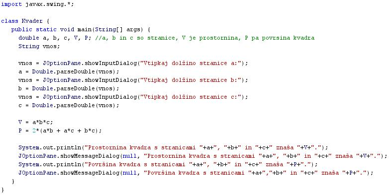

SESTAVLJENI PODATKOVNI TIPI
- Podatkóvni típ je v raèunalništvu ime ali oznaka za abstraktno množico mogoèih vrednosti, ki jih lahko zavzame podatek.
- Podatkovni tip navadno doloèa tudi operacije, ki jih lahko izvajamo nad to množico vrednosti.
- Programski jeziki implicitno ali eksplicitno podpirajo enega ali veè podatkovnih tipov.
- Podatkovni tip predstavlja omejitev, ki se preverja statièno ali dinamièno, s èimer skrbi za pravilno izvajanje programa.
- Pri programiranju uporabljamo razliène podatkovne tipe, odvisno od programskega jezika. Osnovni so obièajno »int« (»integer«, celo število), »bool« (Boolova spremenljivka, »da« ali »ne«), »char« (znaki, vkljuèno s èrkami).
- Vsak izmed njih v pomnilniku (strojno) zaseda neko število nièel in enic (bitov).
- Iz teh lahko gradimo zahtevnejše podatkovne tipe, znane pod imenom razredi (angl. class).
- Gre za podatkovne tipe, kjer enemu objektu dodelimo veè atributov.
- Atributi objekta so lastnosti tega objekta.
- Èe za zgled vzamemo razred 'Oseba', bi lahko bili njegovi atributi 'int leto_rojstva', polje znakov 'char[] ime', 'int visina', 'int teza', ...
- Tako lahko uporabimo kar spremenljivko tipa 'Oseba' in na enem primeru osebe (tukaj že govorimo o objektu) razpolagamo z vsebovanimi atributi.
- Kadar ustvarimo polje oseb, se v spominu rezervira prostor za vse vsebovane objekte (dimenzija polja).
- Eden izmed atributov objekta je lahko tudi objekt istega razreda, ali v primeru dinamiènega programiranja pogosteje kazalec na objekt istega razreda.
- S pomoèjo kazalcev lahko tako objekte povezujemo med seboj, kar v veliki meri izkorišèajo iskalni algoritmi.
- Primer:
- Besedni opis problema in rešitve.
- "Zapiši program, ki bo izraèunal prostornino V in površino P kvadra, pri katerem poznamo vse dolžine stranic. Program mora uporabnika najprej pozvati k vnosu dolžin vseh treh stranic": Vprašamo se, kaj vse bomo morali postoriti za rešitev problema in to opišemo v nekaj stavkih. Potek reševanja problema poskusimo premisliti èim bolj natanèno.
- Pozovi uporabnika k vnosu prve stranice a.
- Pozovi uporabnika k vnosu druge stranice b.
- Pozovi uporabnika k vnosu tretje stranice c.
- Izraèunaj prostornino kvadra V.
- Izraèunaj površino kvadra P.
- V sporoèilnem oknu posreduj izraèunani vrednosti prostornine in površine kvadra.
- Izraèunani vrednosti prostornine in površine kvadra izpiši tudi v interaktivnem oknu delovnega okolja drjava.
VAJA 46:
- V okolju za pisanje izvorne kode v jeziku Java, za prevajanje in za interaktivno delo zapiši zgornji program "Kvader". Pomagaj si s sliko.
- Kodo lahko tudi kopiraš iz te datoteke in jo prilepiš v okolje, v katerem pišeš programèke. Pozor: koda, ki jo boš kopiral/a, vsebuje eno, dve, tri ali štiri napake. Èe želiš, da bo program deloval, moraš napake odkriti in jih odpraviti.
- Izvorno kodo shrani pod imenom "ImePriimek46.java". ImePriimek je seveda tvoje lastno ime in priimek.
- Datoteko "ImePriimek46.java" prevedi.
- Prevedeno datoteko zaženi, preveri rezultat v interaktivnem oknu in poklièi profesorja, da vidi rezultat.
- V zvezek prepiši podatke, ki si jih vnesel, rezultate, ki jih je vrnil program, in formule, po katerih je program raèunal dobljene rezultate.
- Sam/a skonstruiraj diagram poteka v tej uèni enoti in ga nariši v zvezek.
1. Vprašanja:
1. Kaj je podatkóvni típ?
2. Kaj ponavadi doloèa podatkóvni tip?
3. Naštej osnovne podatkóvne tipe pri programiranju.
4. Kako imenujemo zahtevnejše sestavljene podatkóvne tipe?
5. V kakšnem odnosu so med seboj enostavni podatkóvni tipi in sestavljeni podatkóvni tipi?
6. Katera vrsta podatkóvnih tipov premore veè atributov?
7. Kako imenujemo posamezen element, ki pripada doloèenemu razredu?
8. Kaj so atributi podatkóvnih tipov?
9. Zapiši naziv sestavljenega podatkóvnega tipa, ki je naveden v besedilu te uène enote.
10. Naštej atribute sestavljenega podatkóvnega tipa, ki je omenjen v besedilu te uène enote.
2. Zapiši od ene do pet kljuènih besed, ki povzemajo vsebino te uène enote.
3. Povezave do dodatnih informacij.
Gradiva na spletnih straneh Wikipedije.
Spletni priroènik proizvajalca programskega okolja Java. To je podjetje Sun.
|